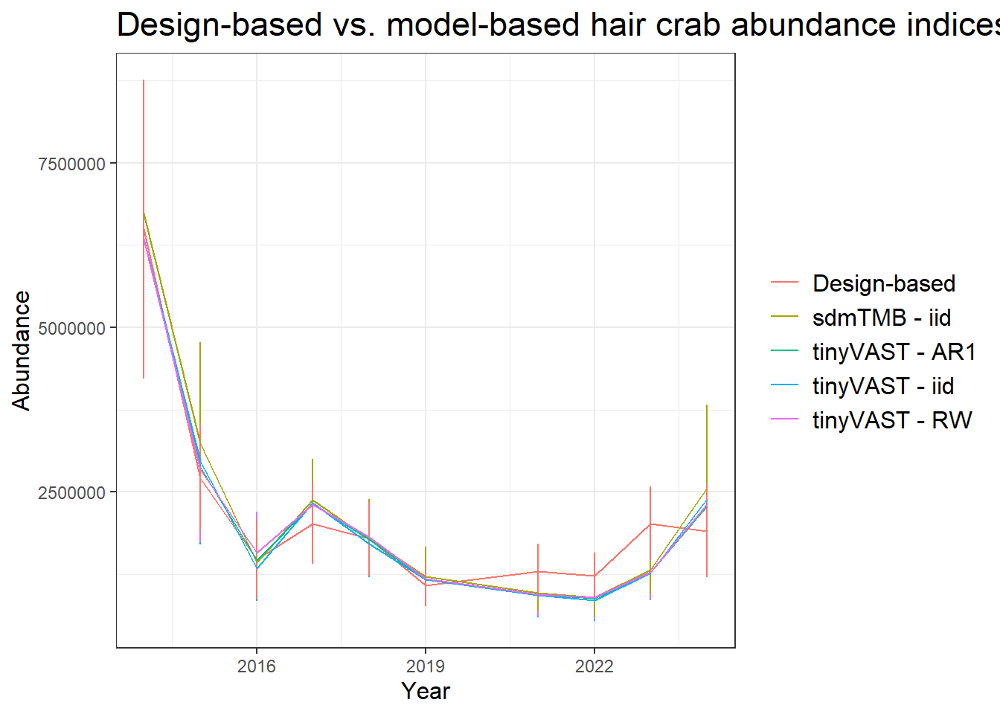
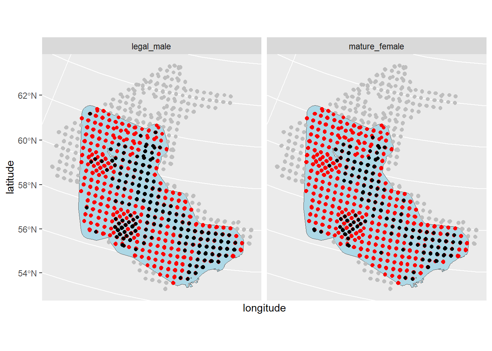
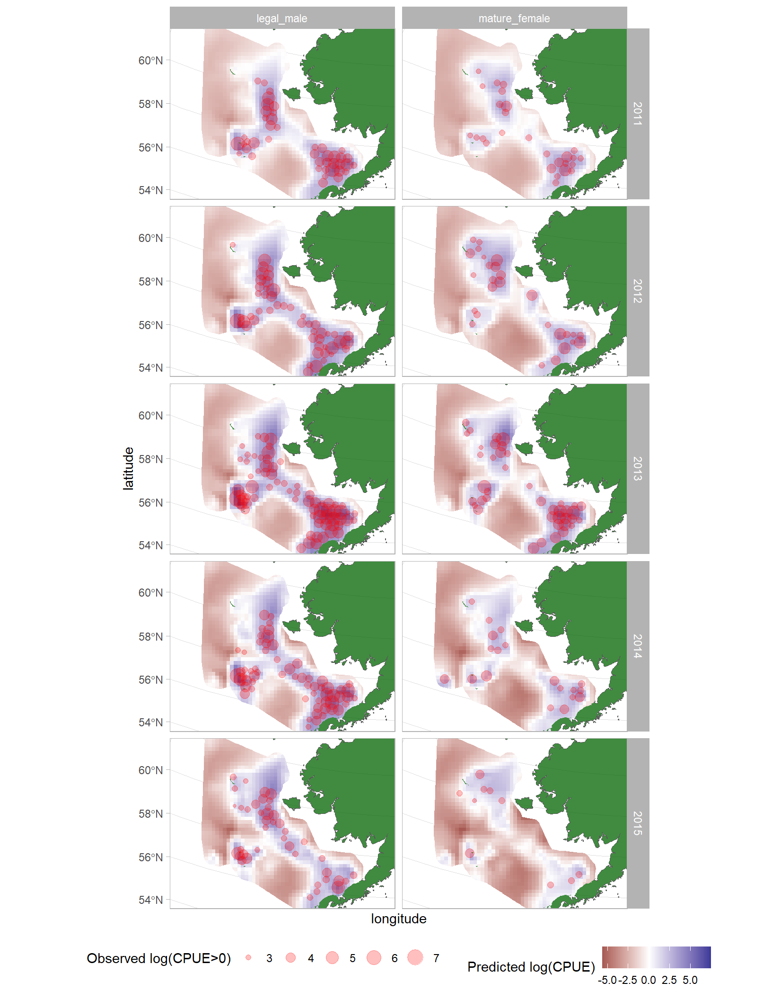

library(tidyverse)
library(sf)
library(tinyVAST)
library(sdmTMB)
library(here)
library(DHARMa)
# load processed data from R/data_processing_and_visualization
load(here::here("data/processed_hair_crab_data.rdata"))
# load hair crab data
load(here::here("data/hair_cpue.rdata"))
# source helper functions
source(here::here("R/helpers.R"))
# Convert sf to data.frame for use with sdmTMB
hair_cpue <-
hair_cpue_sf_filt %>%
sfc_as_cols(., names = c("longitude", "latitude")) %>% # turn points into lat/lon columns
st_set_geometry(NULL) %>% #convert to data.frame
filter(year >= 2014) %>%
mutate(district = factor(district),
var = "hair_crab") %>%
as.data.frame()
# CRS
ak_crs <- "+proj=aea +lat_1=55 +lat_2=65 +lat_0=50 +lon_0=-154 +x_0=0 +y_0=0 +datum=NAD83 +units=km +no_defs"
# load fitted sdmTMB model
load(here::here("data/m1_2.rdata"))
# We will use the same mesh for tinyVAST
sdmTMB_mesh2 <- make_mesh(hair_cpue, c("longitude", "latitude"),
n_knots = 150, type = "kmeans")
tinyVAST_mesh <- sdmTMB_mesh2$meshtinyVAST lab: index standardization and multivariate VAST models
Packages and data
The main objective of this lab is to explore common use-cases of tinyVAST for ecologists and fisheries scientists. We’ll begin by porting over our index standardization model from sdmTMB to understand the components of tinyVAST. We’ll then extend this univariate spatiotemporal model in a multivariate and vector autoregressive context. Lastly, we’ll allow for the multivariate model to estimate two different response distributions for CPUE observations.
Fit the equivalent tinyVAST model
All tinyVAST models require the user to specify arrow or arrow and lag notation expressing spatial, temporal, and/or spatiotemporal interactions among variables. Arrow and lag notation goes like this:
First term - Specifies the variables involved.
tinyVASTworks in long format. If we have two response variables X and Y, then we would indicate that grouping in a column variable containing levels for “X” and “Y”. By defaulttinyVASTassumes this variable is called “var”.- In this first term we indicate the type of effect: One-headed arrow = slope parameter, two-headed arrow = variance/covariance
Second term - If this for a spatial interaction then the second term is the parameter name. If it’s a temporal/spatiotemporal interaction, then the order of the lag.
Third term - For spatial interaction, this is an optional starting value for the parameter. For temporal/spatiotemporal interaction, this is the parameter name.
- When this term is set to “NA”, then the parameter can be preset to a fixed value specified in the fourth term.
Fourth term - Only applicable when lags are specified - this is an optional starting value. If “NA” is specified, then the value of this term is fixed. For random walks, this would be 1.
Our sdmTMB model estimates a spatial random field and an i.i.d. spatiotemporal random field, and we need to code these into arrow notation prior to fitting the model. If no mesh is included (spatial_domain = NULL), then the model is treated as a time series model.
# spatial random field
space_term <- "
hair_crab <-> hair_crab, sd_space
"
spacetime_term <- "
hair_crab <-> hair_crab, 0, sd_spacetime
"
m1_tv <- tinyVAST(
space_term = space_term,
spacetime_term = spacetime_term,
data = hair_cpue,
formula = cpue ~ 0 + as.factor(year),
spatial_domain = tinyVAST_mesh,
family = tweedie(),
time_column = "year",
space_columns = c("longitude","latitude"),
variable_column = "var",
control = tinyVASTcontrol(
use_anisotropy = TRUE,
newton_loops = 1 # sdmTMB sets newton_loops = 1 - set to 1 to get a similar sanity check
)
)
m1_tvCall:
tinyVAST(formula = cpue ~ 0 + as.factor(year), data = hair_cpue,
space_term = space_term, spacetime_term = spacetime_term,
family = tweedie(), spatial_domain = tinyVAST_mesh, control = tinyVASTcontrol(use_anisotropy = TRUE,
newton_loops = 1), space_columns = c("longitude", "latitude"),
time_column = "year", variable_column = "var")
Run time:
Time difference of 9.531387 secs
Family:
$obs
Family: tweedie
Link function: log
sdreport(.) result
Estimate Std. Error
alpha_j -0.1779686 0.576655457
alpha_j -0.8216232 0.587475676
alpha_j -1.6173165 0.618439020
alpha_j -1.1151871 0.585371158
alpha_j -1.2855500 0.587888693
alpha_j -1.8720350 0.614117011
alpha_j -2.0649769 0.622127139
alpha_j -2.0309965 0.615730450
alpha_j -1.8927764 0.624646400
alpha_j -1.3845763 0.613406985
beta_z 1.2399068 0.159847652
theta_z 2.8447076 0.372934373
log_sigma 3.0774578 0.004151168
log_sigma -4.9152495 0.078286884
log_kappa -3.5497154 0.204635719
ln_H_input -0.2358727 0.292745410
ln_H_input -0.6515601 0.412329622
Maximum gradient component: 2.507389e-07
Proportion conditional deviance explained:
[1] 0.7566074
space_term:
heads to from parameter start Estimate Std_Error z_value
1 2 hair_crab hair_crab 1 <NA> 2.844708 0.3729344 7.627904
p_value
1 2.386013e-14
spacetime_term:
heads to from parameter start lag Estimate Std_Error z_value
1 2 hair_crab hair_crab 1 <NA> 0 1.239907 0.1598477 7.756803
p_value
1 8.709695e-15
Fixed terms:
Estimate Std_Error z_value p_value
as.factor(year)2014 -0.1779686 0.5766555 -0.3086221 0.7576090401
as.factor(year)2015 -0.8216232 0.5874757 -1.3985654 0.1619433364
as.factor(year)2016 -1.6173165 0.6184390 -2.6151592 0.0089185869
as.factor(year)2017 -1.1151871 0.5853712 -1.9050941 0.0567678384
as.factor(year)2018 -1.2855500 0.5878887 -2.1867236 0.0287627113
as.factor(year)2019 -1.8720350 0.6141170 -3.0483361 0.0023011242
as.factor(year)2021 -2.0649769 0.6221271 -3.3192201 0.0009026926
as.factor(year)2022 -2.0309965 0.6157305 -3.2985156 0.0009719748
as.factor(year)2023 -1.8927764 0.6246464 -3.0301566 0.0024442696
as.factor(year)2024 -1.3845763 0.6134070 -2.2571903 0.0239961844sanity_tv(m1_tv)✔ Non-linear minimizer suggests successful convergence✔ Hessian matrix is positive definite✔ No extreme or very small eigenvalues detected✔ No gradients with respect to fixed effects are >= 0.001✔ No fixed-effect standard errors are NA✔ No standard errors look unreasonably largeComparisons with sdmTMB
Annual intercepts
# extract parameters estimated as fixed effects (year intercepts)
year_seq <- c(2014:2019, 2021:2024)
# for tinyVAST, these are returned as "alpha_j"
tv_params <- m1_tv$sdrep
tv_names <- names(tv_params$par.fixed)
tv_year_intercepts <- tv_params$par.fixed[which(tv_names == "alpha_j")]
# for sdmTMB, these are "b_j"
sdmTMB_params <- m1.2$sd_report
sdmTMB_names <- names(sdmTMB_params$par.fixed)
sdmTMB_year_intercepts <- sdmTMB_params$par.fixed[which(sdmTMB_names == "b_j")]
tibble(tinyVAST_years = tv_year_intercepts,
sdmTMB_year = sdmTMB_year_intercepts,
year = year_seq)# A tibble: 10 × 3
tinyVAST_years sdmTMB_year year
<dbl> <dbl> <int>
1 -0.178 -0.178 2014
2 -0.822 -0.822 2015
3 -1.62 -1.62 2016
4 -1.12 -1.12 2017
5 -1.29 -1.29 2018
6 -1.87 -1.87 2019
7 -2.06 -2.06 2021
8 -2.03 -2.03 2022
9 -1.89 -1.89 2023
10 -1.38 -1.38 2024tinyVAST and sdmTMB differ slightly in reporting style: sdmTMB provides more “plain English” descriptions of estimated parameters, and tinyVAST gives you variable names as reported by TMB. Ultimately these models are equivalent as expected.
Spatial random field
theta_zs contain your spatial interaction effects and spatial random field SDs
tibble(tinyvast_ssd = tv_params$par.fixed[which(tv_names == "theta_z")],# tinyVAST spatial SD
sdmTMB_ssd = sdmTMB_params$value[1]) # sdmTMB spatial SD# A tibble: 1 × 2
tinyvast_ssd sdmTMB_ssd
<dbl> <dbl>
1 2.84 2.84Spatiotemporal random field
beta_zs contain spatiotemporal interaction effects and spatiotemporal random field SDs.
tibble(tinyvast_st_sd = tv_params$par.fixed[which(tv_names == "beta_z")],# tinyVAST spatial SD
sdmTMB_st_sd = sdmTMB_params$value[3]) # sdmTMB spatial SD# A tibble: 1 × 2
tinyvast_st_sd sdmTMB_st_sd
<dbl> <dbl>
1 1.24 1.24Extend the model to model AR1 and random walk spatiotemporal correlations
We model a spatiotemporal correlation coefficient, rho, by specifying hair_crab -> hair_crab, 1, rho in the spacetime_term arrow and lag notation.
space_term <- "
hair_crab <-> hair_crab, sd_space
"
spacetime_term_ar1 <- "
hair_crab -> hair_crab, 1, rho
hair_crab <-> hair_crab, 0, sd_spacetime
"
# AR1------
m1_tv_ar1 <- tinyVAST(
space_term = space_term,
spacetime_term = spacetime_term_ar1,
data = hair_cpue,
formula = cpue ~ 0 + as.factor(year),
spatial_domain = tinyVAST_mesh,
family = tweedie(),
time_column = "year",
space_columns = c("longitude","latitude"),
variable_column = "var",
control = tinyVASTcontrol(
use_anisotropy = TRUE
)
)
m1_tv_ar1Call:
tinyVAST(formula = cpue ~ 0 + as.factor(year), data = hair_cpue,
space_term = space_term, spacetime_term = spacetime_term_ar1,
family = tweedie(), spatial_domain = tinyVAST_mesh, control = tinyVASTcontrol(use_anisotropy = TRUE),
space_columns = c("longitude", "latitude"), time_column = "year",
variable_column = "var")
Run time:
Time difference of 52.35265 secs
Family:
$obs
Family: tweedie
Link function: log
sdreport(.) result
Estimate Std. Error
alpha_j -0.06901777 0.587126962
alpha_j -0.88501010 0.599123439
alpha_j -1.53108802 0.623510189
alpha_j -1.15544857 0.605406131
alpha_j -1.32769199 0.615389778
alpha_j -1.92616861 0.647293159
alpha_j -2.17154574 0.674083873
alpha_j -2.27576082 0.693248618
alpha_j -2.15586282 0.701944465
alpha_j -1.68346380 0.722435190
beta_z 0.70617863 0.312933061
beta_z 1.18934450 0.183473441
theta_z 2.76848455 0.390478442
log_sigma 3.07743064 0.004152283
log_sigma -4.91488151 0.078316082
log_kappa -3.56306628 0.215596318
ln_H_input -0.21669630 0.289385445
ln_H_input -0.66812538 0.421912410
Maximum gradient component: 0.0007167196
Proportion conditional deviance explained:
[1] 0.7548689
space_term:
heads to from parameter start Estimate Std_Error z_value
1 2 hair_crab hair_crab 1 <NA> 2.768485 0.3904784 7.089981
p_value
1 1.341309e-12
spacetime_term:
heads to from parameter start lag Estimate Std_Error z_value
1 1 hair_crab hair_crab 1 <NA> 1 0.7061786 0.3129331 2.256644
2 2 hair_crab hair_crab 2 <NA> 0 1.1893445 0.1834734 6.482380
p_value
1 2.403031e-02
2 9.028708e-11
Fixed terms:
Estimate Std_Error z_value p_value
as.factor(year)2014 -0.06901777 0.5871270 -0.1175517 0.906422885
as.factor(year)2015 -0.88501010 0.5991234 -1.4771749 0.139628764
as.factor(year)2016 -1.53108802 0.6235102 -2.4555942 0.014065188
as.factor(year)2017 -1.15544857 0.6054061 -1.9085511 0.056320019
as.factor(year)2018 -1.32769199 0.6153898 -2.1574814 0.030968176
as.factor(year)2019 -1.92616861 0.6472932 -2.9757284 0.002922936
as.factor(year)2021 -2.17154574 0.6740839 -3.2214771 0.001275317
as.factor(year)2022 -2.27576082 0.6932486 -3.2827484 0.001028004
as.factor(year)2023 -2.15586282 0.7019445 -3.0712726 0.002131484
as.factor(year)2024 -1.68346380 0.7224352 -2.3302627 0.019792269# Random walk------
spacetime_term_rw <- "
hair_crab -> hair_crab, 1, NA, 1
"
m1_tv_rw <- tinyVAST(
space_term = space_term,
spacetime_term = spacetime_term_rw,
data = hair_cpue,
formula = cpue ~ 0 + as.factor(year),
spatial_domain = tinyVAST_mesh,
family = tweedie(),
time_column = "year",
space_columns = c("longitude","latitude"),
variable_column = "var",
control = tinyVASTcontrol(
use_anisotropy = TRUE
)
)
m1_tv_rwCall:
tinyVAST(formula = cpue ~ 0 + as.factor(year), data = hair_cpue,
space_term = space_term, spacetime_term = spacetime_term_rw,
family = tweedie(), spatial_domain = tinyVAST_mesh, control = tinyVASTcontrol(use_anisotropy = TRUE),
space_columns = c("longitude", "latitude"), time_column = "year",
variable_column = "var")
Run time:
Time difference of 1.088017 mins
Family:
$obs
Family: tweedie
Link function: log
sdreport(.) result
Estimate Std. Error
alpha_j 0.1013600 0.580198386
alpha_j -0.7782199 0.598226024
alpha_j -1.4329661 0.628387577
alpha_j -1.2208347 0.632241583
alpha_j -1.4964347 0.654252040
alpha_j -2.1738873 0.697862628
alpha_j -2.6337703 0.753704516
alpha_j -2.8709228 0.781021036
alpha_j -2.8370506 0.814058250
alpha_j -2.5474106 0.844618218
beta_z -0.9833267 0.140465628
theta_z 2.7311558 0.400018359
log_sigma 3.0775508 0.004153511
log_sigma -4.9141978 0.078370220
log_kappa -3.5893562 0.233730552
ln_H_input -0.2209034 0.298302000
ln_H_input -0.6524612 0.431721251
Maximum gradient component: 0.0006006619
Proportion conditional deviance explained:
[1] 0.7457454
space_term:
heads to from parameter start Estimate Std_Error z_value
1 2 hair_crab hair_crab 1 <NA> 2.731156 0.4000184 6.827576
p_value
1 8.636134e-12
spacetime_term:
heads to from parameter start lag Estimate Std_Error z_value
1 1 hair_crab hair_crab 0 1 1 1.0000000 NA NA
2 2 hair_crab hair_crab 1 <NA> 0 -0.9833267 0.1404656 -7.000479
p_value
1 NA
2 2.55088e-12
Fixed terms:
Estimate Std_Error z_value p_value
as.factor(year)2014 0.1013600 0.5801984 0.1746989 0.8613162612
as.factor(year)2015 -0.7782199 0.5982260 -1.3008793 0.1932997642
as.factor(year)2016 -1.4329661 0.6283876 -2.2803858 0.0225848191
as.factor(year)2017 -1.2208347 0.6322416 -1.9309624 0.0534877048
as.factor(year)2018 -1.4964347 0.6542520 -2.2872449 0.0221815303
as.factor(year)2019 -2.1738873 0.6978626 -3.1150648 0.0018390453
as.factor(year)2021 -2.6337703 0.7537045 -3.4944334 0.0004750690
as.factor(year)2022 -2.8709228 0.7810210 -3.6758585 0.0002370509
as.factor(year)2023 -2.8370506 0.8140582 -3.4850708 0.0004920068
as.factor(year)2024 -2.5474106 0.8446182 -3.0160498 0.0025609118AIC(m1_tv, m1_tv_ar1, m1_tv_rw) df AIC
m1_tv 17 3837.675
m1_tv_ar1 18 3828.573
m1_tv_rw 17 3831.275Generate an annual index
Generate the prediction grid
# polygon for the EBS
cellsize <- 20 #km x 20 km
# polygon for the EBS
ebs_domain <-
st_read(here::here("data/SAP_layers.gdb"),
layer = "EBS_grid",
quiet = TRUE) %>%
st_transform(., ak_crs) %>%
st_union()
# re-grid it to our spatial resolution
ebs_grid <- ebs_domain %>%
st_make_grid(., cellsize = cellsize) %>%
st_intersection(., hair_loc_buffers) %>%
st_as_sf() %>%
mutate(id = 1:nrow(.),
area = as.numeric(st_area(.)))
# area vector to pass to integrate_output()
area_vec <- ebs_grid$area
# expand over time
pred_grid <- ebs_grid %>%
tidyr::expand_grid(.,
year = min(unique(hair_cpue$year)):max(unique(hair_cpue$year))) %>%
st_as_sf() %>%
filter(year != 2020) # COVID year - no survey so should not be in final data
# final outputs
pred_df <- pred_grid %>%
st_centroid() %>%
sfc_as_cols(., names = c("longitude","latitude")) %>%
st_set_geometry(NULL) %>%
as.data.frame()Warning: st_centroid assumes attributes are constant over geometriesAbundance index comparisons
The approach for generating abundance indices with tinyVAST is largely equivalent to sdmTMB using tinyVAST::integrate_output(). However, tinyVAST has additional options for weighting index calculations (using the type argument). We will use the default here that is equivalent to sdmTMB.
# Abundance index calculations-----
## IID tinyVAST-----
est_iid <- sapply( year_seq ,
FUN=\(t) integrate_output(m1_tv, newdata=subset(pred_df,year==t),
bias.correct = TRUE, area = area_vec) ) %>%
t() %>%
as.data.frame() %>%
mutate(year = year_seq) %>%
dplyr::rename(est = Estimate,
se = 2) %>%
mutate(lwr = est - 1.96 * se,
upr = est + 1.96 * se,
model = "tinyVAST - iid") %>%
dplyr::select(lwr, upr, model, year, est)
## AR1 tinyVAST-----
est_ar1 <- sapply( year_seq ,
FUN=\(t) integrate_output(m1_tv_ar1, newdata=subset(pred_df,year==t),
bias.correct = TRUE, area = area_vec) ) %>%
t() %>%
as.data.frame() %>%
mutate(year = year_seq) %>%
dplyr::rename(est = Estimate,
se = 2) %>%
mutate(lwr = est - 1.96 * se,
upr = est + 1.96 * se,
model = "tinyVAST - AR1") %>%
dplyr::select(lwr, upr, model, year, est)
## RW tinyVAST-----
est_rw <- sapply( year_seq ,
FUN=\(t) integrate_output(m1_tv_rw, newdata=subset(pred_df,year==t),
bias.correct = TRUE, area = area_vec) ) %>%
t() %>%
as.data.frame() %>%
mutate(year = year_seq) %>%
dplyr::rename(est = Estimate,
se = 2) %>%
mutate(lwr = est - 1.96 * se,
upr = est + 1.96 * se,
model = "tinyVAST - RW") %>%
dplyr::select(lwr, upr, model, year, est)
## IID sdmTMB-----
model_predictions_df <- predict(m1.2, newdata = pred_df, type = "link",
return_tmb_object = TRUE)
est_iid_sdmTMB <- get_index(obj = model_predictions_df, bias_correct = TRUE, area = pred_df$area) %>%
mutate(model = "sdmTMB - iid")
## Design-based-----
design_based_index <-
hc_design_index_ebs %>%
rename_all(str_to_lower) %>%
mutate(lwr = ifelse((abundance - abundance_ci) < 0, 0,
(abundance - abundance_ci)),
upr = abundance + abundance_ci,
model = "Design-based") %>%
dplyr::select(year,
est = abundance,
lwr,
upr,
model) %>%
filter(year >= 2014)
combined_indices <- bind_rows(
est_iid,
est_ar1,
est_rw,
est_iid_sdmTMB,
design_based_index
)
ggplot(combined_indices)+
geom_errorbar(aes(ymax = upr, ymin = lwr,
x = year, color = model), width = 0) +
geom_line(aes(y = est, x = year, color = model)) +
labs(title = "Design-based vs. model-based hair crab abundance indices",
y = "Abundance",
x = "Year") +
theme_bw() +
theme(legend.title = element_blank(),
legend.text = element_text(size = 12),
axis.title = element_text(size = 12),
title = element_text(size = 14))
Bivariate vector autoregressive model
A defining feature of tinyVAST is the ability to fit multivariate vector autoregressive models, where response variables are relate via cross-lagged effects.
In this example, we will fit a bivariate vector autoregressive spatiotemporal model evaluating cross-lagged effects of male hair crab density on female hair crab density, and vice versa.
Data processing
To begin, we repeat the same data processing workflow but now consider both male and female CPUE. Importantly, we arrange the data in long format, so that the var variable demarcates male and female CPUE groupings.
start_year <- 2010
# combine male and female data and convert to sf
hair_cpue_sf_mf <-
hair_cpue_sf_all %>%
bind_rows(., hair_cpue_female %>%
st_as_sf(., coords = c("longitude", "latitude"), crs = 4326) %>%
st_transform(ak_crs)) %>%
dplyr::rename(var = category) %>%
filter(year >= start_year)
# create buffer around positive catches to drop false zeros before fitting model
hair_loc_buffers_mf <- hair_cpue_sf_mf %>% # across all trawls
filter(cpue > 0) %>%
concaveman::concaveman(., concavity = 3) %>% #Draw concave hull around positive catches
st_buffer(., dist = 45) %>% # extend buffer
st_difference(ak_land) #remove sections of polygon intersecting land
# intersect CPUE observations with buffer object
hair_cpue_mf <- hair_cpue_sf_mf %>%
mutate(district = ifelse(district %in% c("ALL", "NORTH"),
"N. EBS/NBS",
district)) %>%
st_intersection(., hair_loc_buffers_mf) %>%
sfc_as_cols(., names = c("longitude", "latitude")) %>%
st_set_geometry(NULL) %>%
as.data.frame()Warning: attribute variables are assumed to be spatially constant throughout
all geometries# define new mesh
tinyVAST_mesh2 <- sdmTMB::make_mesh(hair_cpue_mf,
xy_cols = c("longitude","latitude"),
type = "kmeans",
n_knots = 150)$mesh
ggplot() +
geom_sf(data = hair_loc_buffers_mf, fill = "lightblue") + # buffer region
geom_sf(data = hair_cpue_sf_mf, color = "grey") + # all observations
geom_point(data = hair_cpue_mf %>% filter(cpue == 0), aes(x = longitude,
y = latitude), color = "red") +
geom_point(data = hair_cpue_mf %>% filter(cpue > 0), aes(x = longitude,
y = latitude)) +
facet_wrap(~var)
Fitting the model
Here we specify that we want to model the effects of lag-1 male and female hair crab density on densities at time t We also model the cross-lagged effect of lag-1 mature female crab density on legal male density, and lag-1 mature male crab density on female crab density. Lastly, we specify an iid spatiotemporal random field component for each sex. For the sake of runtime, we exclude the spatial random field and anisotropy from the model.
spacetime_term_vast <- "
# autoregressive effects
legal_male -> legal_male, 1, b11
mature_female -> mature_female, 1, b22
# cross lagged effects
mature_female -> legal_male, 1, b21
legal_male -> mature_female, 1, b12
# spatiotemporal variances (seperate)
legal_male <-> legal_male, 0, sd_spacetime1
mature_female <-> mature_female, 0, sd_spacetime2
"
process <- FALSE
if (process){
# fit model
m2_tv <- tinyVAST(
spacetime_term = spacetime_term_vast,
data = hair_cpue_mf,
time_column = "year",
space_columns = c("longitude","latitude"),
variable_column = "var",
formula = cpue ~ 0 + var,
spatial_domain = tinyVAST_mesh2,
family = tweedie() )
save(m2_tv, file = here::here("data/tinyVAST_m2.rdata"))
} else {
load(here::here("data/tinyVAST_m2.rdata"))
}Generating the prediction grid
We will use a slightly different prediction grid than before, but with the same spatial resolution. In this case, we intersect the grid with the male/female buffer instead of the male only buffer. We also additionally expand the prediction grid by a var variable indicating “legal_male” or “mature_female” crab CPUE.
# create EBS grid for male/female crab
ebs_grid_mf <- ebs_domain %>%
st_make_grid(., cellsize = cellsize) %>%
st_intersection(., hair_loc_buffers_mf) %>%
st_as_sf() %>%
mutate(id = 1:nrow(.),
area = as.numeric(st_area(.)))
# area vector to pass to integrate_output()
area_vec_mf <- ebs_grid_mf$area
# expand over time
pred_grid_mf <- ebs_grid_mf %>%
tidyr::expand_grid(.,
year = min(unique(hair_cpue_mf$year)):max(unique(hair_cpue_mf$year)),
var = c("legal_male", "mature_female")) %>%
st_as_sf() %>%
filter(year != 2020) # COVID year - no survey so should not be in final data
# final outputs
pred_df_mf <- pred_grid_mf %>%
st_centroid() %>%
sfc_as_cols(., names = c("longitude","latitude")) %>%
st_set_geometry(NULL) %>%
as.data.frame()Warning: st_centroid assumes attributes are constant over geometriesPredicting from the model
Predicting from tinyVAST models is similar to predicting from mgcv models. Where sdmTMB returned a tibble, tinyVAST returns a list of vectors. Predict from the model with se.fit = FALSE if you need to move quickly.
if (process){
m2_tv_predictions <- predict(m2_tv,
newdata = pred_df_mf, se.fit = TRUE)
save(m2_tv_predictions, file = here::here("data/vast_model_predictions.rdata"))
} else {
load(here::here("data/vast_model_predictions.rdata"))
}
m2_tv_predictions_df <- pred_df_mf %>%
mutate(est_tv = m2_tv_predictions$fit,
se_tv = m2_tv_predictions$se.fit)
model_predictions_sf_mf <- pred_grid_mf %>%
left_join(., m2_tv_predictions_df, by = c("id","year","var"))
ystart <- 2011
yend <- 2015
ggplot() +
geom_sf(data = ak_land, fill = "darkgreen", alpha = 0.75) +
geom_sf(data = model_predictions_sf_mf %>%
filter(between(year, ystart, yend)), aes(fill = log(est_tv),
color = log(est_tv))) +
geom_point(data = hair_cpue_mf %>% filter(cpue > 0,
between(year, ystart, yend)),
aes(x = longitude, y = latitude,
size = log(cpue)), color = "red", alpha = 0.25) +
scale_fill_gradient2(low = scales::muted("red"),
high = scales::muted("blue"))+
scale_color_gradient2(low = scales::muted("red"),
high = scales::muted("blue"))+
guides(color = "none") +
labs(fill = "Predicted log(CPUE)",
size = "Observed log(CPUE>0)") +
theme_light() +
coord_sf(ylim = c(650, 1500),
xlim = c(-1300, -175)) +
facet_grid(year ~ var) +
theme(legend.position = "bottom")
DHARMa residuals
tinyVAST currently has functionality to visualize DHARMa residuals associated with fitted models (in addition to deviance and response residuals via residuals()). These tend to break on my machine when rendering the document so I save/load them here.
if (process){
new_data <- simulate(m2_tv, nsim = 100,type = "mle-mvn")
save(new_data, file = here::here("data/m2_tv_dharma_sims.rdata"))
} else {
load(here::here("data/m2_tv_dharma_sims.rdata"))
}
fitted <- predict(m2_tv)
res = DHARMa::createDHARMa( simulatedResponse = new_data,
observedResponse = hair_cpue_mf$cpue,
fittedPredictedResponse = fitted )
plot(res)Multiple response distributions
Lastly, we extend our bivariate VAST model by treating male and female hair crab CPUE as being drawn from distinct Tweedie distributions. The model takes ~ 8 minutes to run on my machine, and it throws errors when checked using the sanity_tv function. Regardless, the Tweedie parameters, reported as log_sigma in the outputs, are virtually equivalent for male and female observations.
fam_list <- list(
legal_male = tweedie(),
mature_female = tweedie()
)
if (process){
fam_list <- list(
legal_male = tweedie(),
mature_female = tweedie()
)
m3_tv <- tinyVAST(
spacetime_term = spacetime_term_vast,
data = hair_cpue_mf,
time_column = "year",
space_columns = c("longitude","latitude"),
variable_column = "var",
distribution_column = "var", # must be supplied with >1 family arg
formula = cpue ~ 0 + var,
spatial_domain = tinyVAST_mesh2,
family = fam_list )
save(m3_tv, file = here::here("data/diff_tweeds.rdata"))
} else {
load(here::here("data/diff_tweeds.rdata"))
}